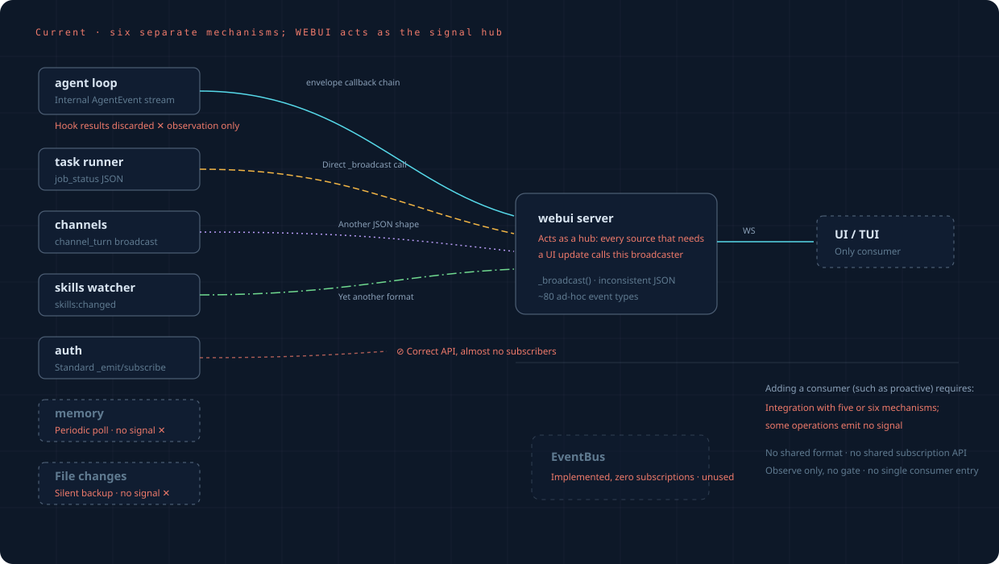
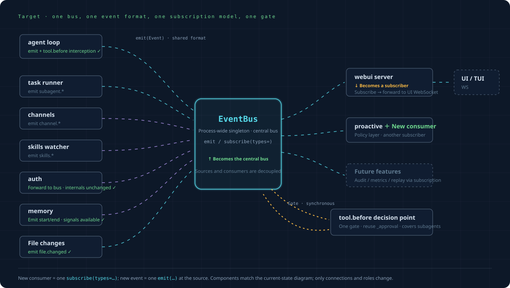

From “independent mechanisms”
to “a unified event bus”.
How the framework changes after introducing the event layer: current and target states, changes to each subsystem and migration order.No wholesale rewrite: run old and new paths together and migrate one source at a time.
From unused code to the sole event hub: process singleton, unified Event and type-based subscriptions
From a forced signal hub to an ordinary subscriber: subscribe to the bus → forward to frontend WS
Simply another subscriber. Connect with one subscribe(types=…) call; auditing, statistics and replay work the same way.
Current state: webui is forced to coordinate signals
Almost every signal exists to make information visible to the frontend, so all are directly connected to webui's _broadcast. Five line styles represent five distinct mechanisms. Auth has the right model but no listeners; memory and file changes have no signals; hooks observe but cannot intercept; EventBus is unused. A new consumer must integrate separately with five or six mechanisms, while some useful moments have no signal at all.

Target: a unified event bus
Component positions correspondone to one with the current-state diagram; only connections and roles change. All sources use emit(Event) and all consumers use subscribe(types=…); the framework's only interception point is tool.before , a synchronous query point reusing existing approval and applying to subagents. Everything else is asynchronous observation.

Subsystem changes
| Subsystem | Now | Future | Change size |
|---|---|---|---|
| EventBus | Unused, zero subscriptions | Upgrade to type subscriptions and a process singleton, then enable | Core |
| agent loop | Internal AgentEvent stream;hook return values are discarded | Also emit to the bus at key points; add a synchronous query for tool.before(interception becomes possible) | Small |
| webui server | Directly connected by everyone; the de facto hub | Subscribe to the bus and forward to the frontend; retire direct paths source by source | Medium |
| task runner | Direct _broadcast job_status connection | emit subagent.*, with webui subscribing and forwarding broadcasts | Small |
| dispatcher | on_event callback chain directly to webui | Retain during transition and additionally emit user.prompt_submitted and others | Small |
| channels | Direct broadcast_channel_turn connection | emit channel.*; retain direct connection during transition | Small |
| auth | Its own _emit/subscribe(already correct) | Leave the source unchanged and translate into the bus through a small bridge | Very small |
| context | on_event callback | Also emit in the callback context.* | Very small |
| memory | Periodic polling with no signal | Emit at start/end of processing and represent timer triggers as events | Very small |
| File changes | Silent backup with no signal | Emit at checkpoint_before_edit file.changed | Very small |
| plugin hooks | Observe-only, 6 firing points | Use the bus internally; retain hooks as a plugin API or retire them gradually | Decision point |
Migration: parallel paths, one source at a time
The first three steps areentirely additive: the bus runs beside existing paths with no behavior change and can be stopped or reverted at any time. Only step four changes old paths, protected by shadow comparison.
Upgrade EventBus with type subscriptions and a singleton; agent loop / task runner / dispatcher emit in parallel at key points. Existing paths continue unchanged.
file.changed event at checkpoint_before_edit;tool.before synchronous query point reusing _approval and applying to subagents.
One unidirectional bridge each for auth / context / channels / memory translates into a unified Event on the bus. Source logic remains unchanged.
Start in shadow mode: bus forwarding and old direct connections run together and outputs are compared. After confirming equivalence, disconnect each old source path. This is transparent to the frontend.
Connect the proactive rule layer; every future feature then needs only the bus and a single subscribe call.
Intentionally unchanged
What changes and what stays unchanged both matter. The following areoutside this evolution:
openprogram/events/{registry,bus,bridges}.py and actual emit sites